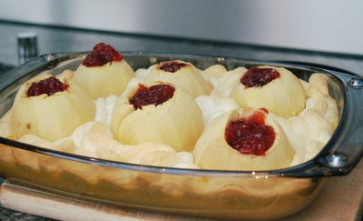

| Zutaten für 4 Personen: | |
| 6 | mittelgrosse Äpfel |
| Butter | |
| brauner Zucker | |
| Zitronensaft | |
| rote Konfitüre | |
| 5 dl | Milch |
| 1/2 | Vanillestengel |
| 3 | Eier |
Äpfel schälen und das Kerngehäuse ausstechen. Die Äpfel in eine Auflauf-Form verteilen.
In jede Höhlung ein Stück Butter mit braunem Zucker vermischt geben.
Auf den Grund der Form 1/2 dl Wasser mit dem Saft einer halben Zitrone giessen und die Äpfel im Backofen während etwa 15 Minuten bei mässiger Hitze backen.
Inzwischen 5 dl Milch mit einem halben, aufgeschnittenen Vanillestengel aufkochen, 1 EL Maispuder mit etwas kalter Milch glatt rühren und unter ständigem Schwingen in die kochende Milch giessen. Während einigen Minuten auf kleiner Hitze, unter ständigem Schwingen kochen lassen.
Vom Herd nehmen und 60 g Zucker sowie 3 Eigelb dazu mischen, alles gut verrühren und die Creme neben die Äpfel giessen. Vorher den Wasser-Saft weggiessen!
Die 3 Eiweiss mit 1 EL Zucker steif schlagen, mit der Spritzdüse auf die Oberfläche verteilen, die Oberfläche der Äpfel soll frei bleiben. Bei schwacher Hitze im Backofen goldbraun überbacken.
Die Höhlungen der Äpfel mit roter Konfitüre füllen.
Herbert Eigenmann
Hat eigentlich ganz gut geschmeckt. Sandra war nicht überwältigt und liess mir in den folgenden Tagen das Restenaufessen. RE, 29.5.2008
@LINKBACK_TAG@ @WAKELOCK@